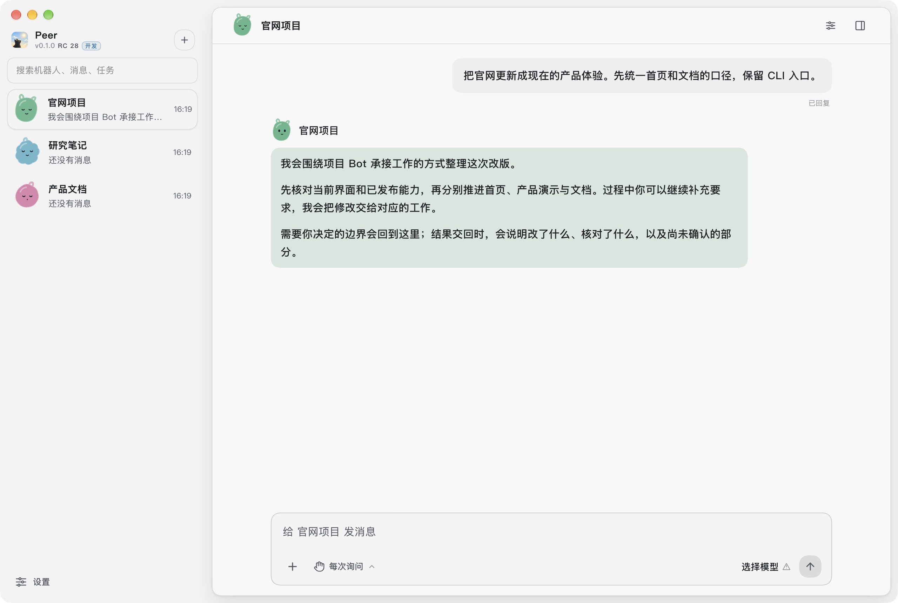
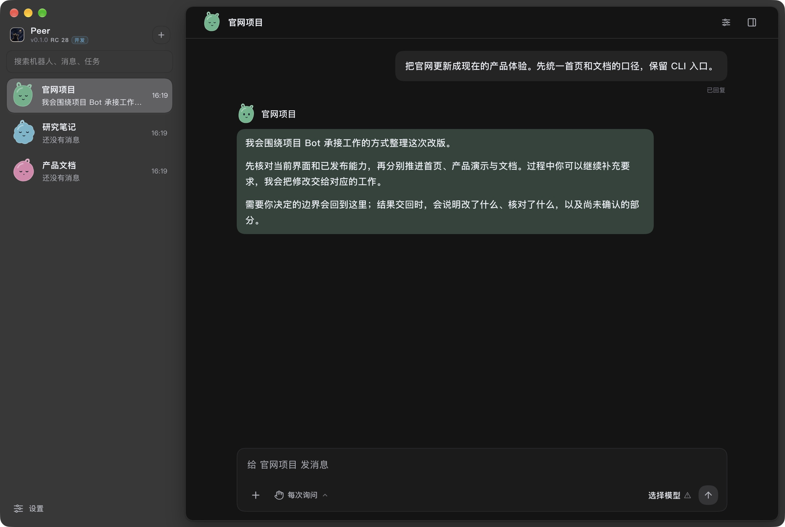

One Bot for each project. Give it a goal, let it coordinate the work, and return for the decisions that need you. Execution, permissions and evidence stay under local control.
The project Bot experience is in the 0.1 preview. The 0.0 stable release uses the classic interface.


Actual Desktop interface · fictional projects and conversation0.1 development build · not a real-model execution receipt
Start with something real
Give it the outcome you need.
Code, documents and research can share the same working relationship. Start with a goal and a boundary; keep the relevant project close.
Investigate and repair
“Find why this request is slow, and fix the cause.”
The Bot reads the project, narrows the scope and delegates bounded changes with criteria for checking the result.
Bring back: the explanation, a diff and the checks actually performed.
Move an engineering change
“Update this feature across the project. Keep the API compatible.”
Independent work can move in parallel. Additions and corrections return to the Bot that holds the project context.
Bring back: related changes, review findings and remaining gaps.
Research and document
“Compare these approaches and write down a recommendation.”
Keep sources, notes and deliverables with the project. Read documents and code alongside the main conversation.
Bring back: a readable conclusion, source references and open questions.
How you work together
One conversation. Work that keeps its context.
You should not have to manage every Agent turn. The project Bot is your point of contact as work is delegated, corrected and reviewed.
0.1 preview workflow
Set the goal
Your request
Update the website for the current product. Keep the CLI entry point.
What the project Bot does
The project Bot reads the folder and existing rules, clarifies the outcome and identifies the boundaries before arranging execution.
Your part
State the goal and any constraints. Clarify only the decisions that change the outcome.
Choose a stage to read the example. This walkthrough is illustrative; it does not start Agents or execute commands.
A project, not a disposable chat
Less supervision. Clearer handoffs.
The project stays with you
The folder, project memory, goals and history remain available. Long work uses governed context and retrieval rather than relying on one endless transcript.
Independent execution
Work Agents have their own context and bounded goals. The main Bot coordinates additions and questions; execution still follows local permissions.
Results with a basis
The Bot explains what changed, what was checked and what remains uncertain. Verification, acceptance and Git integration are distinct facts.
You keep control
Add context, change direction or ask to stop. User decisions and permissions are not replaced by an Agent saying it can handle them.
Local authority
Your machine keeps the authority.
Models provide cognition and may run with a cloud provider. Peer handles local capability execution, permission decisions and evidence. What a model may receive follows the configured provider and context permissions.
Operations stay within the granted scope. Project Agents do not approve permissions on your behalf.
A completed reply is not proof of completed work. Checks and evidence determine what can be handed back.
Recovery keeps the original context and history. Unknown operations are reconciled before any replay.
Release facts checked on 2026-10-29: stable 0.0.18; preview 0.1.0-rc.28. Recent supervision and withdrawal fixes are on the development line; merging them does not publish a new RC.